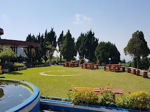

Puncak Rembangan adalah destinasi wisata legendaris di Jember dengan ketinggian 650 mdpl, menawarkan udara sejuk pegunungan, pemandangan kota, dan fasilitas rekreasi lengkap sejak era kolonial.

Gemerlap lampu kota Jember dilihat dari ketinggian Puncak Rembangan pada malam hari.
Sumber: ---Rasanya ingin kabur sebentar dari hiruk pikuk kota, tapi bingung mau ke mana yang dekat dan terjangkau? Buat warga Jember dan sekitarnya, jawabannya sudah lama ada di sana. Namanya Puncak Rembangan. Tempat yang sudah eksis sejak zaman Belanda ini ternyata menyimpan lebih banyak aktivitas dari yang kebanyakan orang tahu.
Mengenal Puncak Rembangan
Terletak di kaki Gunung Argopuro dengan ketinggian sekitar 650 meter di atas permukaan laut (mdpl), Puncak Rembangan menawarkan suhu udara yang bisa mencapai 14 derajat Celsius. Lokasinya berada di Desa Kemuning Lor, Kecamatan Arjasa, atau sekitar 35 menit perjalanan dari pusat Kota Jember.
Biaya Tiket dan Operasional
Wisata ini sangat ramah di kantong dengan rincian biaya sebagai berikut:
- Tiket Masuk: Rp 7.500 (Hari biasa) / Rp 10.000 (Akhir pekan).
- Camping: Rp 20.000 (Anak) / Rp 30.000 (Dewasa).
- ATV: Rp 100.000 per sesi.
- Parkir: Rp 5.000 (Motor) / Rp 10.000 (Mobil).
- Jam Buka: 24 Jam.
7 Hal Seru yang Bisa Dilakukan
- Menikmati City Light: Saat malam tiba, area ini menawarkan pemandangan lautan cahaya kota Jember yang romantis.
- Berenang di Air Pegunungan: Tersedia kolam renang yang airnya langsung dari mata air pegunungan, sangat jernih dan menyegarkan.
- Menjelajah dengan ATV: Uji adrenalin dengan melewati jalur alam berbukit khas lereng Argopuro.
- Camping Malam: Nikmati suasana tenang pegunungan dengan berkemah di area yang telah disediakan.
- Spot Foto Ikonik: Terdapat taman bunga rapi dan bangunan bersejarah peninggalan Belanda tahun 1937.
- Wisata Edukasi Sapi: Pengunjung bisa melihat langsung proses pemerahan susu sapi di peternakan setempat.
- Kuliner Susu Segar: Menikmati susu sapi hangat khas Rembangan di tengah udara dingin adalah pengalaman wajib.
"Rembangan bukan tempat yang mengejar tren. Nilainya bukan pada kebaruan, tapi pada ketenangan yang selalu relevan di tengah kesibukan siapa pun."
Fasilitas Pendukung
Kawasan ini dilengkapi dengan fasilitas yang memadai seperti toilet bersih, mushola, area parkir luas, dan pusat informasi. Bagi yang ingin bermalam, tersedia hotel bersejarah peninggalan kolonial yang telah direstorasi dengan tetap mempertahankan arsitektur aslinya.
FAQ Puncak Rembangan
1. Apakah cocok untuk anak kecil?
Sangat cocok. Tersedia taman bermain, kolam renang, dan akses kendaraan langsung ke area wisata.
2. Berapa lama waktu ideal di sana?
Idealnya 6 hingga 8 jam, namun bagi pecinta alam, camping bermalam sangat direkomendasikan.
3. Apakah tersedia sinyal seluler?
Sinyal cukup stabil karena lokasinya tidak terlalu terpencil, namun disarankan menyiapkan peta offline.
4. Kapan waktu terbaik melihat sunrise?
Datanglah sebelum pukul 06.00 pagi untuk mendapatkan momen kabut tipis dan cahaya matahari terbaik.
5. Apakah hotel harus dipesan terlebih dahulu?
Sangat disarankan melakukan reservasi jauh hari, terutama saat musim liburan atau akhir pekan.
Sumber: PPID Kabupaten Jember, Kompas Travel, Pantura7, dan Radar Madura.